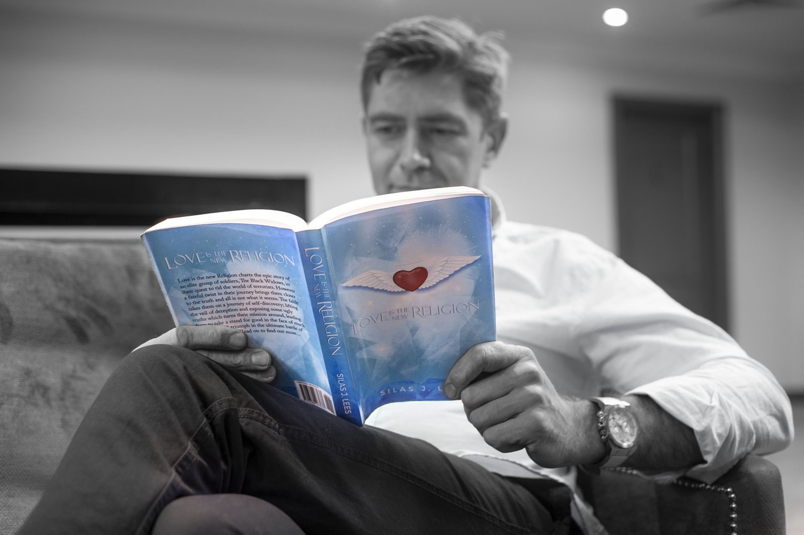

My Story
Three businesses I'd built had closed. What followed were three months I spent mostly in bed, on what I can only honestly describe as Guinness, Netflix, and Dominoes Pizza. Friends who I thought would call, didn't.
The turning point came in an unremarkable way — counting the empty cans on the floor and realising something had to change. I reached out. I went through cognitive behavioural therapy, and started to understand the voice in my head that had been telling me, for years, that I was a fake, a fraud, a failure.

Part of that recovery included an Ayahuasca retreat. I want to be plain about this, the same way I was in the book itself: I am not trying to play the hero, or recommend or promote Ayahuasca as a panacea. It was one part of my own path — not a prescription for yours.
Starting in August 2015, I spent almost three years channelling everything into what became this book. I'm mildly dyslexic. I didn't do particularly well at school. And in 2018, after nearly three years of work, I published a 116,000-word novel — something I genuinely didn't think I had in me, and something that still feels vulnerable to put my name to.
I don't know exactly where this leads next — the book, the story behind it, or what comes after. What I do know is why I wrote it. If it inspires just one person, I shall feel incredibly blessed.
Love and light always,
Silas